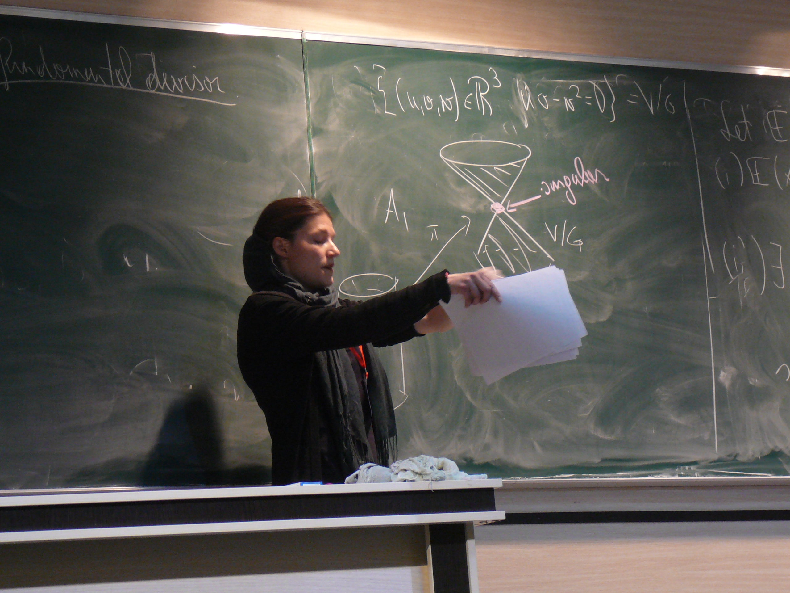

SINGREP: Linking Singularity Theory and Representation Theory with Homological Methods
A Marie Sklodowska-Curie Project at the University of Leeds (Eleonore Faber & Robert Marsh)
Project description
In algebraic geometry one tries to understand and explain geometric phenomena of zerosets of polynomial equations
(algebraic varieties) with algebraic techniques. Singularities of algebraic varieties are, roughly speaking, points of
indeterminacy, where most analytical methods collapse. Geometrically, this corresponds e.g. to cusps or crossing points. In
a practical example, the arm of a robot can break if it passes through a singular point, which could result in a complete
breakdown of the system. Such a situation should be avoided by theoretical considerations.
This project lies at the intersection of singularity theory, (non-commutative) algebraic geometry, commutative algebra, and
representation theory. The main goal is to develop homological methods to understand geometric phenomena of algebraic
varieties in the presence of singularities and use them to study representation theoretic concepts such as cluster categories
and friezes. The project will provide a bridge between these seemingly distant areas that can be exploited in both directions.
News
I gave a talk on frieze patterns in Middlesbrough, in the Tesside University Maths Club! For some more info see here .
Published articles/preprints
- R.-O. Buchweitz, E. Faber, and C. Ingalls: A McKay correspondence for reflection groups, accepted for publication in Duke Math. J. 2019, see arXiv:1709.04218[math.AG] .
- E. Faber, G. Muller, and K.E. Smith: Non-commutative resolutions of toric varieties, Adv. Math. 351 (2019), 236--274. See arXiv:1805.00492[math.AC] .
- E. Faber: Trace ideals, normalization chains, and endomorphism rings, accepted for publication in PAMQ 2019, see arXiv:1901.04766[math.AC].
- K. Baur, E.Faber, S. Gratz, K. Serhiyenko, and G. Todorov: Friezes satisfying higher SL$_k$-determinants, arXiv:1810.10562[math.RA]
- R.-O. Buchweitz, E. Faber, and C. Ingalls: The magic square of reflections and rotations, PDF , submitted.
Talks

Photo credit: P.-G. Plamondon
I gave a series of four lectures on the McKay correspondence and noncommutative desingularizations at the School ISCRA (Isfahan School on Representations of Algebras) in Isfahan (Iran) in April 2019 and at the Advanced Course Crossing Cohomological bridges in frame of the Follow up of IRTATCA in Barcelona (Spain) in June 2019.
More talks:
- Noncommutative Resolutions of toric varieties, at 18th International Conference on Representations of Algebras (ICRA 2018), Prague, Czech Republic, August 2018; and York Algebra Seminar November 2018.
- Noncommutative resolutions and rings of differential operators of toric varieties, at One day meeting in Combinatorial Algebraic Geometry, University of Bristol, Bristol (UK), September 2018.
- Cluster structures on Grassmannians and $\mathrm{SL}_k$-friezes, at LaCIM Seminar, UQAM, Montreal (Canada), October 2018.
- Reflection arrangements, their discriminants, and the McKay correspondence, at Meeting on Free divisors and hyperplane arrangements, Paris (France), December 2018.
- Reflections, rotations, and singularities via the McKay correspondence, at London Algebra Colloquium, Queen Mary University London, London (UK), January 2019.
- The magic square and a McKay correspondence for reflection groups, at Leeds Algebra Seminar, University of Leeds, Leeds (UK), January 2019; and Algebraic Geometry and Physics Seminar, Loughborough University, Loughborough (UK), February 2019; and Geometry Seminar, University of Bath, Bath (UK), February 2019.
- Noncommutative resolutions and rings of differential operators of toric rings, at Workshop Singularities and Homological Aspects of Commutative Algebra, Mathematisches Forschungszentrum Oberwolfach, Oberwolfach (Germany), February 2019.
- Noncommutative singularity theory via the McKay correspondence at Pure Colloquium, University of Leeds, Leeds (UK), April 2019.
- Some matrix factorizations of discriminants of reflection groups at Oberseminar Algebraische Geometrie, Universität Hannover, Hannover (Germany), June 2019.
- A McKay correspondence for reflection groups at Workshop RRAGE: Ragnar's Ramifications in Algebra and Geometry Emerging , Fields Institute, Toronto (Canada), July 2019.
- $SL_k$-friezes and Grassmannian cluster categories at Workshop Quiver varieties and representation theory , CRM, Montreal (Canada), August 2019.
- The McKay correspondence and noncommutative resolutions of discriminants of reflection groups at Workshop Tilting Theory, Singularity Categories, and Noncommutative Resolutions , CMO, Oaxaca (Mexico), September 2019.
- Non-commutative resolutions of toric varieties at Workshop Toric Geometry , Mathematisches Forschungszentrum Oberwolfach, Oberwolfach (Germany), September 2019.
- Grassmannian cluster structures -- friezes and infinite constructions at Algebra Seminar, Carleton University, Ottawa (Canada), October 2019.
- Noncommutative desingularizations of toric varieties at Workshop EDGE days: Fano varieties, cones and links , University of Edinburgh, Edinburgh (Scotland), November 2019.
- Singularities coming from reflection groups and the McKay correspondence at GLEN, University of Sheffield, Sheffield (UK), November 2019.
- Noncommutative resolutions and rings of differential operators of toric varieties at Geometry Seminar, Kings College, London (UK), December 2019.
- Countable Cohen--Macaulay type and the infinity-gon at 2019 International Conference on Singularity Theory , Tsinghua Sanya International Mathematics Forum, Sanya City, Hainan (China), December 2019.
back to Eleonore's homepage